Name: T-shaped ganchi ruler
Material: stainless steel
Size: SKU-01 8*9cm T-shaped ruler
SKU-02 10*13cm T-shaped ruler
SKU-03 Full British scale 4in*2in
SKU-04 Full British scale 6in*4in
The thickness is 1.2mm"
Weight: SKU-01 8*9cm T-shaped ruler: 35g
SKU-02 10*13cm T-shaped ruler: 80g
SKU-03 Full British scale 4in*2in: 25g
SKU-04 Full British scale 6in*4in: 85g"
Features:
HIGH PRECISION GRADE: This construction tool's forged tip allows for optimal contact and a secure grip; eliminates stripping. Great for taking measurements inside or outside a square; as well as checking table saw adjustments.
Construction: This lightweight steel cube is made from high-quality steel; ensuring optimal durability. Therefore; it can survive even the most severe jobsite damage. The tool features a low-glare; rust-resistant powder coating.
Scale: This gauge has easy-to-read scales. Great for laying out and identifying patterns in roofs, framing, stair work and more.
Application: This easy-to-carry construction tool is ideal for establishing right angles; and marking cutoff work on wide stock. It is a useful tool for designing layouts and patterns.
Features:
HIGH PRECISION GRADE: This construction tool's forged tip allows for optimal contact and a secure grip; eliminates stripping. Great for taking measurements inside or outside a square; as well as checking table saw adjustments.
Construction: This lightweight steel cube is made from high-quality steel; ensuring optimal durability. Therefore; it can survive even the most severe jobsite damage. The tool features a low-glare; rust-resistant powder coating.
Scale: This gauge has easy-to-read scales. Great for laying out and identifying patterns in roofs, framing, stair work and more.
Application: This easy-to-carry construction tool is ideal for establishing right angles; and marking cutoff work on wide stock. It is a useful tool for designing layouts and patterns.
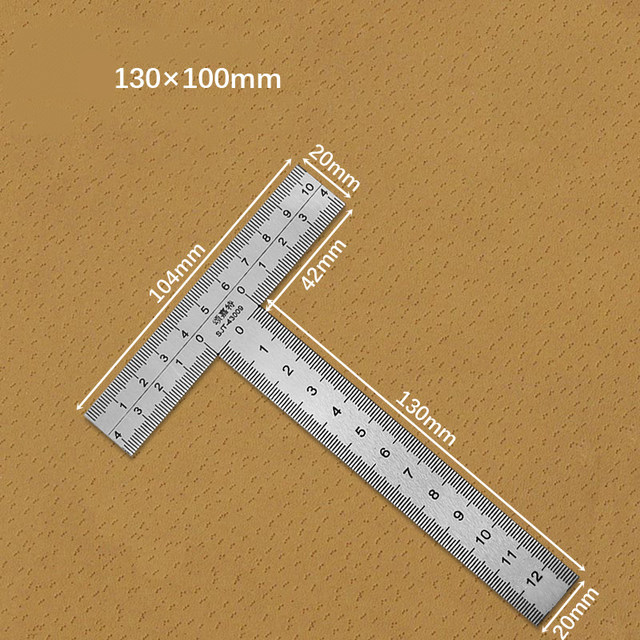
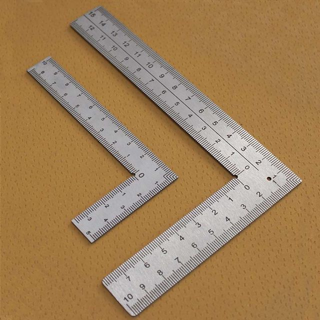
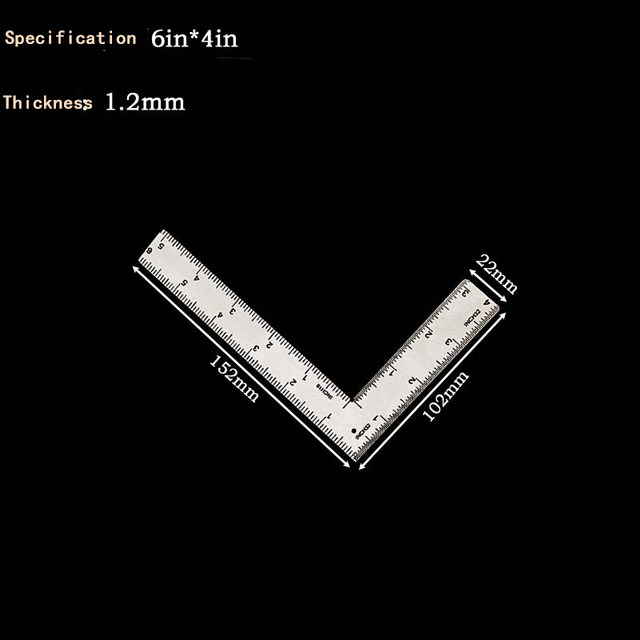
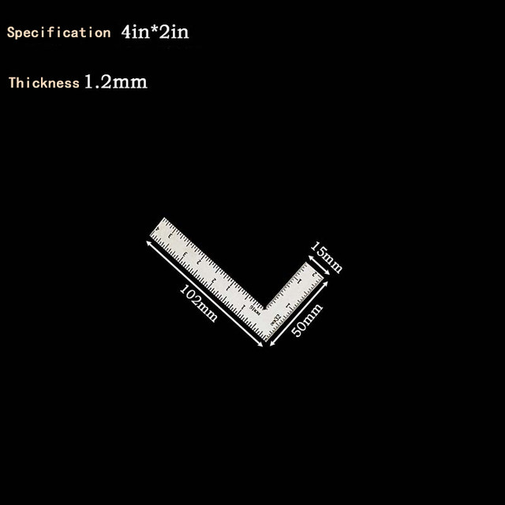
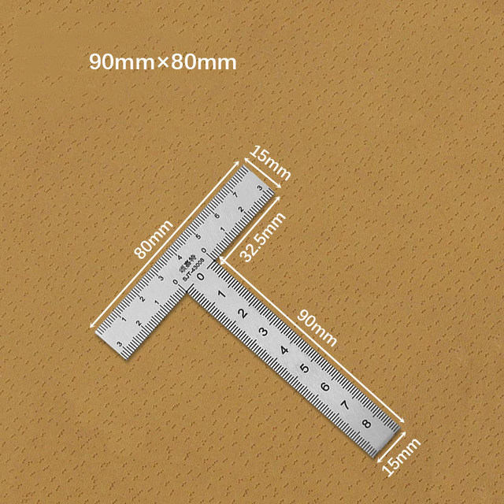
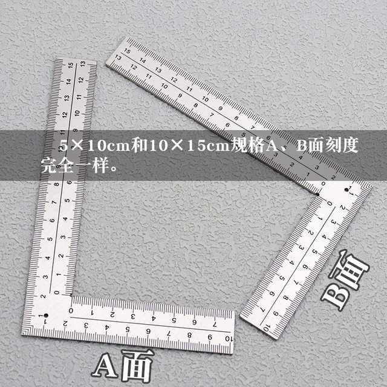
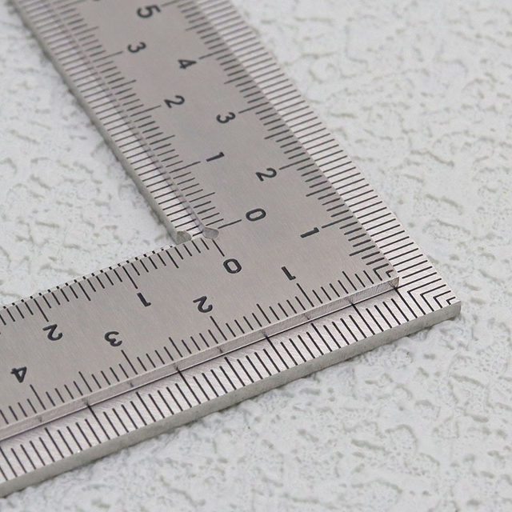
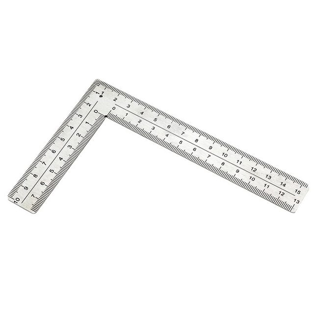
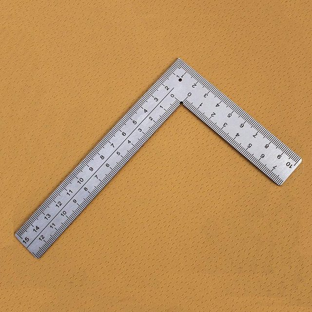
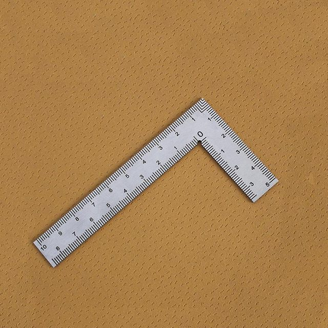
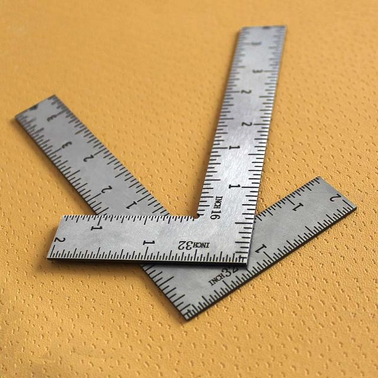
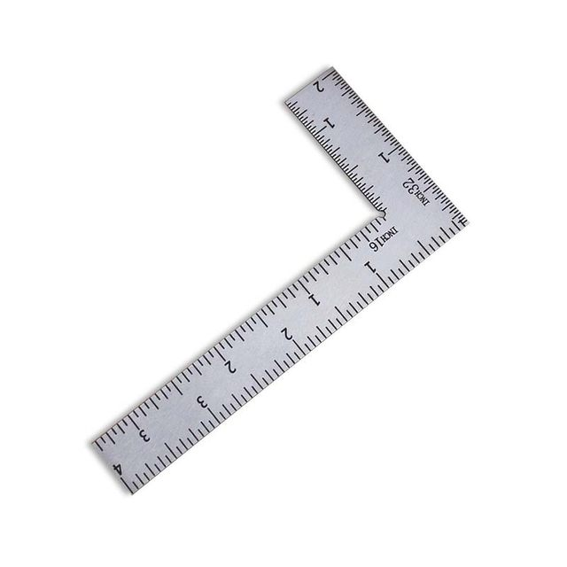